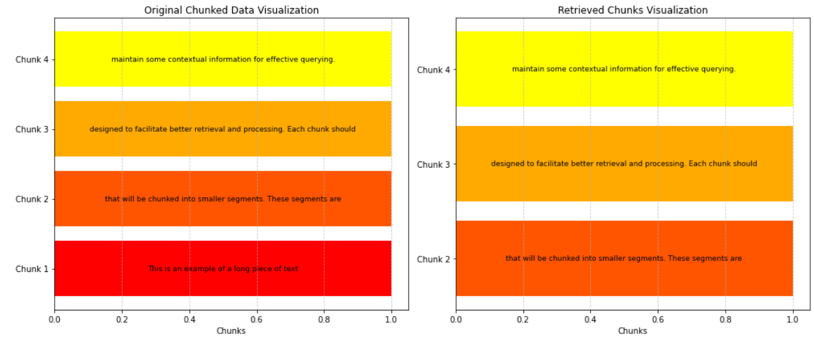

Use Cases
Maintenance Alerts (Healthcare)
In healthcare diagnostics, medical guidelines and alert notifications can be enhanced through fixed-length chunking. This approach organizes information into concise, standardized segments, making it easier for healthcare professionals to quickly access critical data. By structuring content in this way, clinicians can more efficiently interpret patient information, leading to improved decision-making and better patient outcomes.
Marketing Campaigns (Advertising)
The evaluation of marketing strategies, where data is systematically categorized into distinct components and metrics, is perfectly suited for structured segmentation. This approach enables marketers to effectively analyse and compare different campaign elements, ensuring optimal performance and cohesive messaging across various channels.
Paired-End Genome Sequencing (Analysis of Genetic Sequences in Life Sciences)
The examination of genetic sequences involves data that is consistently organized into specific lengths and patterns. This structure makes it ideal for processing using fixed-length chunks, enhancing the efficiency and accuracy of genomic analysis.
Data Collection from Structured Surveys (Education)
In the education sector, particularly when evaluating student feedback or standardized assessments, employing fixed-length chunking can be an effective method for systematically organizing and interpreting response data. This strategy facilitates uniform segmentation of student responses, allowing educators to easily identify trends and insights that can enhance teaching practices and improve learning outcomes. By breaking down the data into manageable sections, educators can more effectively analyse student experiences and performance, ultimately leading to better-informed decisions and improved educational services.
Fixed-length Chunking Code
Example of Fixed-length Chunking Result

Pros and Cons of Fixed-length Chunking
| Pros | Cons |
|---|---|
| Ease of Implementation: Fixed-length chunking is simple and straightforward, making it easy to apply in various contexts. | Semantic Disruption: Text can be split in ways that disrupt its meaning, potentially confusing readers or systems that rely on context. |
| Precise Control: This method allows for fine-tuned adjustments to the size of each chunk, enabling tailored processing based on specific needs. | Information Loss: There’s a risk of truncating important information at chunk boundaries, which can lead to incomplete understanding or analysis. |